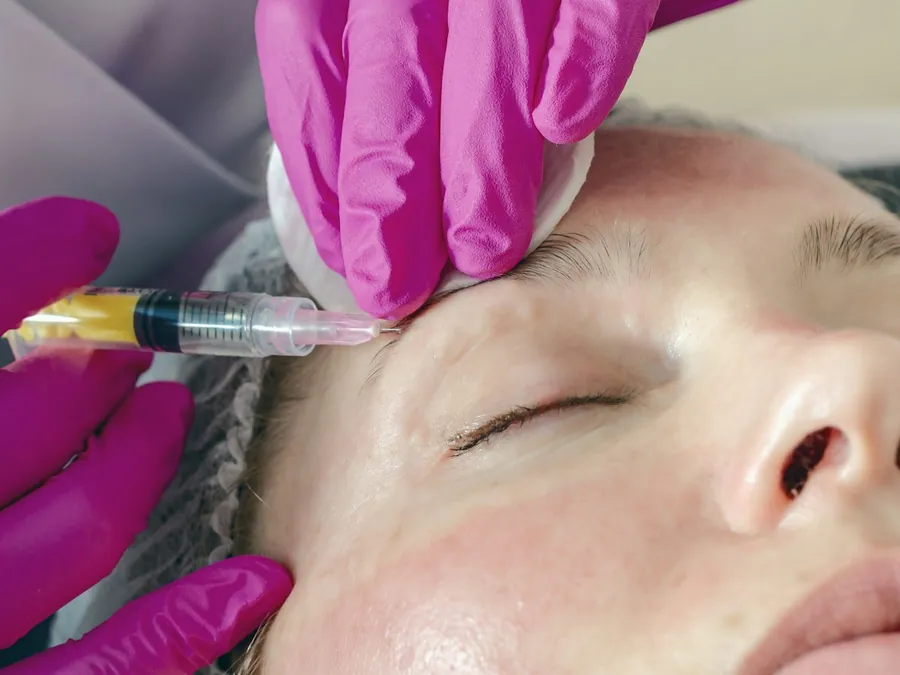

Antes de decidir
Hilos tensores o lifting facial:
la diferencia es cuánta flacidez tienes
Uno es una sesión en consulta. El otro es una cirugía en quirófano. No compiten entre sí: responden a grados distintos de flacidez.
Googleas hilos tensores y te sale una sesión de consultorio; googleas lifting facial y te sale una cirugía en quirófano. Las dos prometen una cara menos caída, y ahí es fácil quedarse con la que suena menos invasiva sin preguntarse si de verdad alcanza. La diferencia no es de precio ni de moda: es de cuánta flacidez tienes y de qué tanto puede corregir cada técnica.
Qué hace cada uno
Los hilos tensores son suturas reabsorbibles que se colocan bajo la piel del rostro o el cuello, en consulta, sin cortes: levantan de forma mecánica el tejido donde se ubican y, según la Sociedad Estadounidense de Cirujanos Plásticos (ASPS), estimulan además la producción de colágeno. Es una sola sesión de 45 a 60 minutos, con la Dra. Valeria Enciso, médica estética.
El lifting facial es otra cosa: una cirugía de 3 a 5 horas en quirófano, con el Dr. Fernando Ruiz, cirujano plástico, en las salas habilitadas de Q2. Se reposicionan las capas profundas de la cara y el cuello y se retira el exceso de piel, no solo se tensa la superficie.
Lo que de verdad decide cuál te toca
No se trata de cuál técnica prefieres, sino de cuánta piel sobra. La ASPS lo resume así: los hilos funcionan mejor en flacidez leve a moderada en mejillas, mandíbula o cuello; en flacidez marcada, los tratamientos sin cirugía no logran los mismos resultados que un lifting. Si la piel todavía responde y lo que buscas es frenar un poco el reloj, los hilos pueden bastar. Si la mandíbula ya perdió su línea o la papada cuelga, un hilo no va a levantar lo que ya está suelto; ahí se evalúa la cirugía.
Esa frontera no se ve bien en el espejo ni en una foto de redes: se palpa. Por eso la valoración presencial empieza siempre examinando tu piel, no preguntando qué quieres probar primero.
La recuperación, no solo el número de días
3 a 7 días contra 2 a 3 semanas no es solo una cifra de calendario. Con los hilos puedes seguir tu rutina casi de inmediato, cuidando el sol los primeros días; con el sol de Medellín, eso significa protector solar todos los días, no solo cuando sales de viaje. Con el lifting, en cambio, necesitas pedir la incapacidad en el trabajo con tiempo, tener quien te lleve y te recoja el día de la cirugía y se quede contigo la primera noche, y aceptar que la primera semana es de vendaje e inflamación antes de empezar a verte mejor.
Lo que ninguno corrige
Ninguno de los dos borra manchas ni mejora la textura de la piel: si eso es lo que te molesta, el camino es otro, no estos dos. Y ninguno es permanente ni detiene el envejecimiento: en los hilos, el material se reabsorbe y el efecto se va apagando entre los 12 y los 18 meses; en el lifting, el resultado dura años, pero la piel sigue envejeciendo después, como advierte la ASPS. Tampoco hay garantía de resultado en ninguno de los dos: toda intervención, con o sin cirugía, tiene riesgos, y te los explican uno a uno antes de firmar el consentimiento informado.
Todo esto se confirma en tu valoración presencial en Medellín: si el examen apunta a flacidez leve, te atiende la Dra. Valeria Enciso; si ya es flacidez marcada, te atiende el Dr. Fernando Ruiz. Sales con el diagnóstico y tu plan por escrito, no con una técnica elegida al azar. Si lo que te preocupa es más la pérdida de volumen que la flacidez, puedes leer también bioestimuladores de colágeno: qué son y para quién; y si sigues decidiendo entre dos cirugías de cuerpo, está mini abdominoplastia o abdominoplastia completa. Agenda tu valoración cuando quieras que te lo confirmen en persona.
Procedimientos de esta guía
Esta guía es informativa y no reemplaza una valoración médica. La indicación, los tiempos de recuperación y la fecha de regreso los define tu especialista en persona. Todo procedimiento tiene riesgos y los resultados varían de una persona a otra.
Preguntas frecuentes
Preguntas frecuentes
¿Los hilos tensores pueden reemplazar un lifting facial?
No, si la flacidez ya es marcada. Según la ASPS, los hilos funcionan mejor en flacidez leve a moderada, y los tratamientos sin cirugía no logran los mismos resultados que un lifting. Para mejillas, papada o cuello muy caídos, el lifting sigue siendo la opción quirúrgica.
¿Cuántos días de incapacidad necesito para cada uno?
Los hilos tensores no dan incapacidad formal: la recuperación es de 3 a 7 días, con algo de inflamación y morados. El lifting facial sí la requiere, de 2 a 3 semanas, porque es una cirugía en quirófano con anestesia general o sedación.
¿Cuánto dura el resultado de cada uno?
El de los hilos es inmediato y progresivo, y dura de 12 a 18 meses porque el material se reabsorbe. El del lifting se asienta entre el mes 3 y el 6, y se mantiene muchos años, aunque el envejecimiento natural sigue su curso en los dos casos.
Tengo flacidez leve en la mandíbula, ¿con cuál empiezo?
Con flacidez leve suele evaluarse primero la opción sin cirugía. Pero la respuesta no sale de una autoevaluación: depende de cuánta piel sobra y de cómo responde al examen, y eso lo confirma quien te atienda en la valoración presencial.
¿Puedo pasar de los hilos tensores a un lifting facial más adelante?
Sí, es un camino frecuente: muchas personas empiezan con hilos cuando la flacidez es leve y, años después, cuando ya es mayor, evalúan el lifting. No es que uno falle; es que cada uno responde al grado de flacidez que tienes en ese momento.
Blog
Sigue leyendo.

Bótox o ácido hialurónico: qué hace cada unoUno relaja el gesto que arruga. El otro rellena lo que perdió volumen. Pedir el que no te sirve solo retrasa tu resultado.Leer Cuánto dura el bótox y cada cuánto repetirloEl efecto no se apaga de un día para otro, y la fecha de repetir no sale de un calendario.Leernoon Clinic
Tu valoración de hilos tensores
Todo empieza con una conversación con nuestros especialistas.
Te respondemos en minutos por WhatsApp, en horario de atención. Resolvemos tus dudas y agendamos tu valoración presencial; por WhatsApp no diagnosticamos. Por qué noon